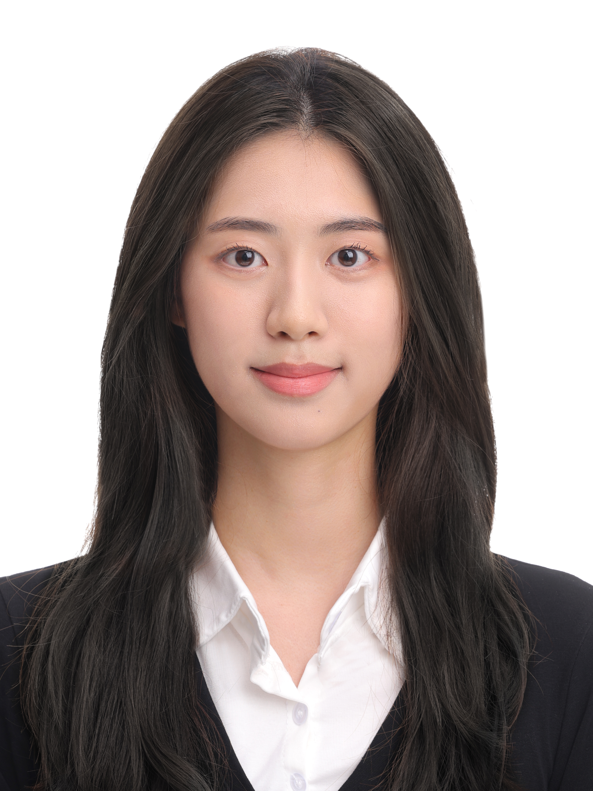
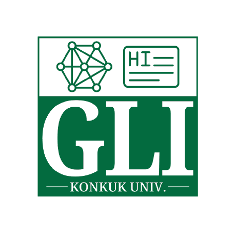
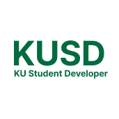

안녕하세요! 현재 건국대학교 컴퓨터공학부 학부생입니다. 현재 오병국 교수님의 지도를 받아 건국대학교 Graph & Language Intelligence Lab에서 학부연구생으로 활동하고 있습니다.



템플릿 기반 로그 구조화와 임베딩 기법을 결합해 F1-score 기준 약 5%p의 이상탐지 성능을 개선했습니다.
자세히 보기 →LLM 기반으로 사용자 맞춤 단어카드를 생성하고 Epson 프린터로 출력하는 서비스입니다.
자세히 보기 →전공 역량 기반 로드맵 서비스로, 사용자와 운영자 간 요구사항 충돌을 데이터 기반으로 해결하고 실제 배포까지 이어졌습니다.
자세히 보기 →AI 기반으로 사용자 맞춤형 역사 교육 여행 일정을 설계해주는 서비스입니다.
자세히 보기 →뇌졸중 조기진단을 돕는 서비스입니다.
해외 가상화폐 뉴스를 번역해주는 서비스입니다.
AI 기반 개인 맞춤형 취업 로드맵 서비스로, 활동 자료를 업로드하면 포트폴리오와 직무를 자동으로 추천합니다.
자세히 보기 →AR 기술로 아이를 ‘보는 사용자’에서 ‘학습 참여자’로 만드는 능동적 동화책 서비스입니다.
자세히 보기 →문화예술활동 양극화가 심한 전라권을 데이터로 분석하고, 군집별 특성에 맞는 정책을 제안한 데이터 분석 프로젝트입니다.
자세히 보기 →